6 面部上三分之一：颞窝
面部上三分之一颞凹
POLINA HOLOVINA, AINA CERVERA-BAREA, AND JANI VAN LOGHEM
6.1 引言
随着年龄的增长，太阳穴会变得凹陷，眼眶缘更加明显，导致面部骨骼化外观，这是由于骨和脂肪的吸收所致。该区域包含颞肌保留韧带（temporal retaining ligament），它由位于上颞融合线处的粘连区（temporal ligamentous adhesion; TLA）构成。该结构是一种低密度的纤维组织，连接深筋膜和浅筋膜，并限制所有方向的活动度。TLA发出两个分支：上颞隔（superior temporal septum）和下颞隔（inferior temporal septum）（图 6.1）[1]。就隔膜而言，一些作者不将其归类为真正的韧带，因为STS仅位于深筋膜和浅颞筋膜之间，尽管它是纤维壁 [1]。因此，在骨膜上补充丢失的体积并提升颞部区域（通过靶向TLA），如Amaral及其同事所建议的 [2]，可能会创造出自然
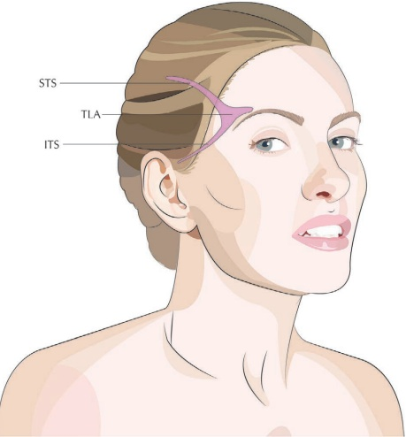
焕发活力的外观。在本章中，我们描述了使用锐针和非创伤性钝性套管针治疗颞凹的不同技术。与锐针注射相比，钝性套管针在皮下、界面或骨膜上放置产品时能提供更高的精确度 [3]。锐针通常更容易控制。由于该区域解剖变异程度很高，动脉的确切位置无法准确预测，因此必须使用安全的技术来避免血管内注射（图 6.2）[4]。有关韧带提升的更多信息，请参阅第 11 章。
6.2 颞凹（锐针骨膜团注技术）
关于注射放置，参见图 6.3。
6.2.1 分步技术
- 清洁并标记太阳穴嵴、外眼眶缘和颧弓。确定最凹陷的区域（图 6.4）。
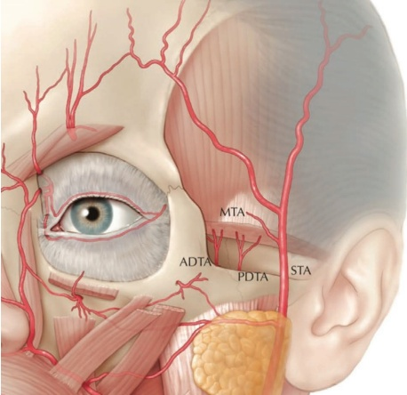
-
可考虑进行颧颞神经阻滞。在颧弓的融合点，向外侧眶缘深处注射约 0.5–1 mL 的 2% 利多卡因；有关局部麻醉，请参阅第 3 章。
-
使用全粘度（未稀释）的羟基磷灰石钙（CaHA）。
-
检查搏动情况，并避免触及颞动脉和静脉。
-
将 27G、19 mm 的钝性套管针垂直于皮肤缓慢推进至骨膜处（图 6.5）。锐针应轻触骨膜，患者可能会感觉到一定的压力。
-
吸液并非必需，因为它会产生假阴性结果，且医生不应仅依赖此技术来避免血管内注射 [5]。
-
在骨膜上缓慢、低压地以团注方式注射约 0.05–0.1 mL 未稀释的 CaHA（图 6.6）。
-
部分回撤、重新定向，并将针头再次推进至骨膜处，距离第一个团注约 5 mm。
-
再用另一个团注注射约 0.05–0.1 mL 的未稀释 CaHA，并使斜面朝下。
-
重复这些步骤，直到凹陷得到满意矫正。
-
用轻柔按摩均匀（图 6.7）。
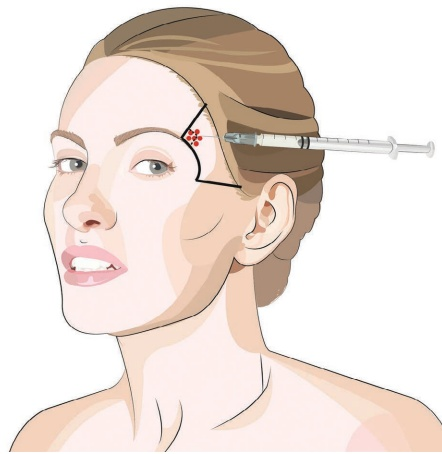
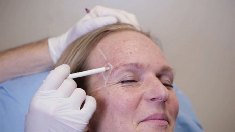
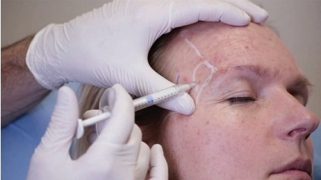
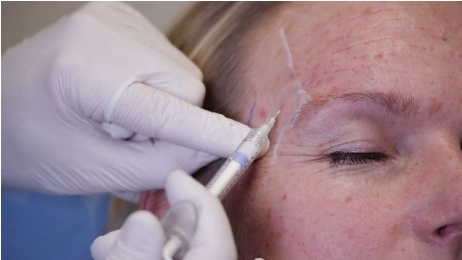
6.3 颞凹（间层钝性套管针技术；颧弓进针点）
注射定位，参见图 6.8。
6.3.1 分步技术
- 对颞嵴、外侧眶缘和颧弓进行消毒和标记。确定
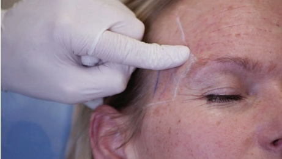
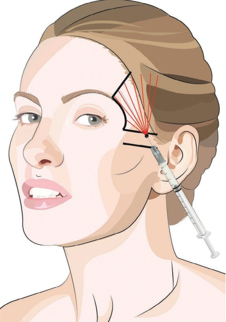
最大凹陷区域。触诊并标记浅颞动脉，确定进入点，使套管针的轨迹不平行于该动脉。
-
在颧弓前缘、发际线前方，标记进入点并进行麻醉。
-
可考虑行颧颞神经阻滞。在颧弓融合点深层注射约 0.5–1 mL 的 2% 利多卡因；参见第 3 章的阻滞麻醉。
-
使用 23G 针头进行预穿孔。
-
将套管针通过皮肤到达皮下脂肪层。作为测试，推进套管针并向上拉动，观察套管针上方的皮肤厚度（图 6.9）。
-
将套管针尖端退回到进入点，然后将其向下倾斜 45° 直到感觉到阻力（图 6.10）。
-
旋转套管针并穿过该阻力（颞骨-顶深筋膜）。
-
为测试套管针是否确实位于一层深度，再次向上拉动套管针，检查套管针上方的组织是否更厚（图 6.11）。
-
向颞嵴推进并开始扇形注射。
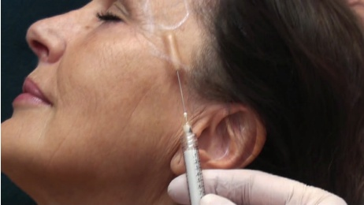
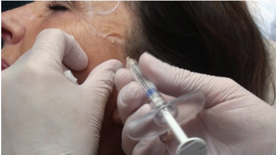
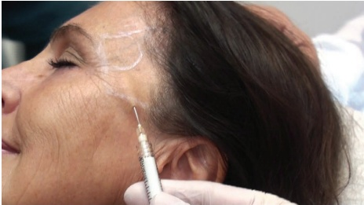
-
还可以考虑向发际线以下的区域推进，以改善毛发生长和提升侧颊。
-
用轻柔按摩使产品均匀分布。
6.4 颞凹（皮下钝性套管针技术；颧弓入口点）
注射用量参考图 6.8。
6.4.1 步骤技术
-
对颞嵴、外眼眶缘和颧弓进行消毒和标记。确定最深陷的区域。
-
触诊并标记浅颞动脉，确定入口点，使钝性套管针的轨迹垂直于该动脉。
-
根据组织厚度，使用羟基磷灰石钙（CaHA）标准稀释液（将 0.3 mL 的 2% 利多卡因加入 1.5 mL 的 CaHA）或 1:1 稀释的 CaHA。
-
从颧弓标记入口点，位于发际线前方，并对该区域进行麻醉（图 6.12）。可使用 23G 锐针预刺孔。
-
将 25G、50 mm 的钝性套管针尖从皮肤推进至皮下脂肪层。将注射器几乎平行于治疗区域表面放置，在缓慢旋转注射器的同时推进钝性套管针。通过向上提拉钝性套管针来检查深度。
-
在用非惯用手抬起颞部侧方时，将钝性套管针完全推进（图 6.13）。
-
开始扇形操作；放置每条线最多 0.05 mL 的微小反向线条（图 6.14）。
-
确保为每一条反向线性填充物创建新的通道，以均匀分布产品。
-
如果遇到阻力，很可能是由于下颞隔膜所致。旋转注射器，这有助于钝性套管针穿过组织。
-
还可以考虑向发际线以下的区域推进，以改善毛发生长和提升侧颊。
-
用轻柔按摩使产品均匀分布（图 6.15）。
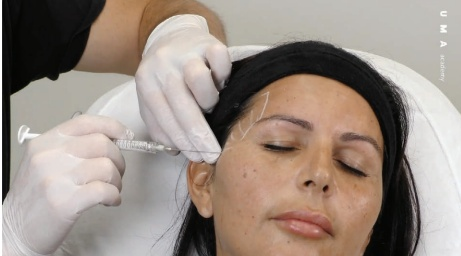
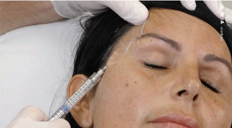
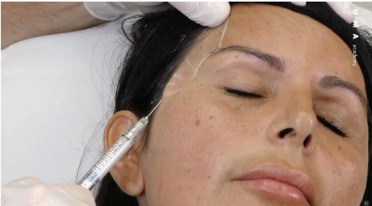
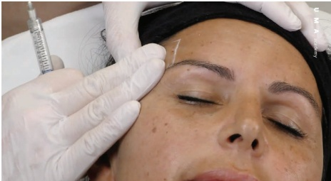
6.5 颞凹（骨膜钝性套管针技术；颞嵴入口点）注射用量参考图 6.16
6.5.1 步骤技术
-
对颞嵴、外眼眶缘和颧弓进行消毒和标记。确定最深陷的区域。
-
可考虑进行颧颞神经阻滞。注射约 0.5–1 mL 的 2% 利多卡因
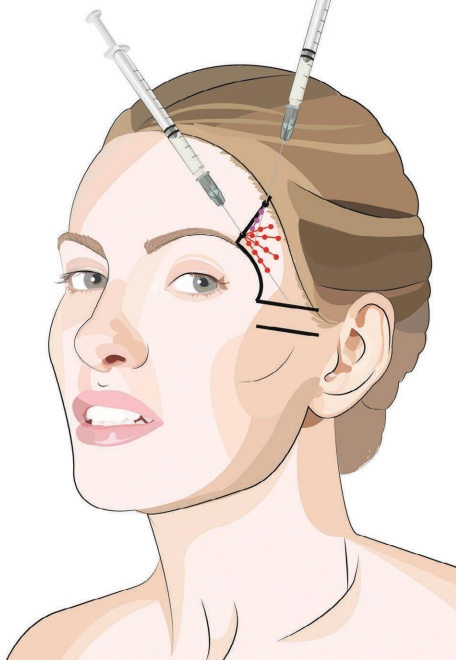
至颧弓融合点的外眶缘深部；有关块麻醉，请参阅第 3 章。
-
检查搏动并避免触及浅颞动脉和静脉。
-
在距眶缘上方约 1 cm 处，标记进入点位于颞嵴外侧边缘的稍靠外侧。
-
用含肾上腺素的 1% 利多卡因皮下麻醉，然后将针进一步推进至颞窝骨膜层。可触及深颞筋膜（图 6.17）。
-
当针尖接触到骨膜时，注射约 0.2 mL 的局部麻醉剂以减轻患者不适感。
-
针不能太深。如有必要重新定位，直到找到最靠颅侧的到达骨膜的轨迹。
-
记住麻醉针的方向。
-
使用更粗的规格针（18–23G）在皮肤上建立进入点。
-
在不移动皮肤位置的情况下，将针进一步推进（沿骨膜方向；图 6.18）。
-
在轻柔触及骨膜的同时，旋转一次针并撤出。
-
切换到未稀释的 CaHA，使用 25G 硬质套管针。
-
与进入针相同的方向，且不移动皮肤位置，将套管针穿过皮肤和深颞筋膜（图 6.19）。
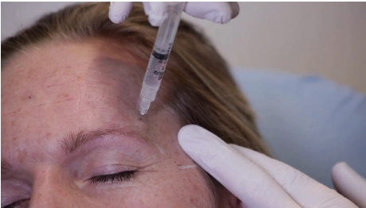
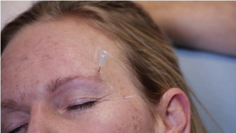
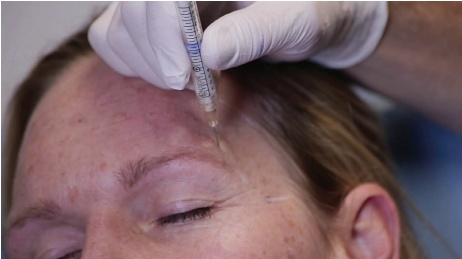
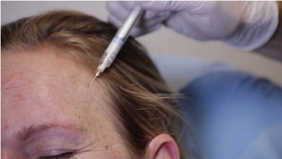
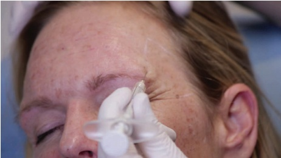
-
当钝性套管针位于骨膜上时，可以感觉到套管针在骨膜上刮擦的典型感觉。
-
推进钝性套管针并给予多个约 0.05–0.1 mL 的团注，直至达到所需效果。将每次团注的最大体积控制在 0.1 mL（图 6.20）。
-
如有必要，可在靠近发际线处设置额外的入点（图 6.21）。消毒后重复步骤 5。
-
用轻柔按摩均匀分布。
6.6 颞部凹陷（筋膜间钝性套管针技术；颞嵴入点）
注射用量，参见图 6.22。
6.6.1 分步技术
-
清洁并标记颞嵴、外眶缘和颧弓。确定最凹陷的区域。
-
可考虑进行颧颞神经阻滞。在颧弓融合点处，向外眶缘深层注射约 0.5–1 mL 的 2% 利多卡因；请参阅第 3 章的局部麻醉。
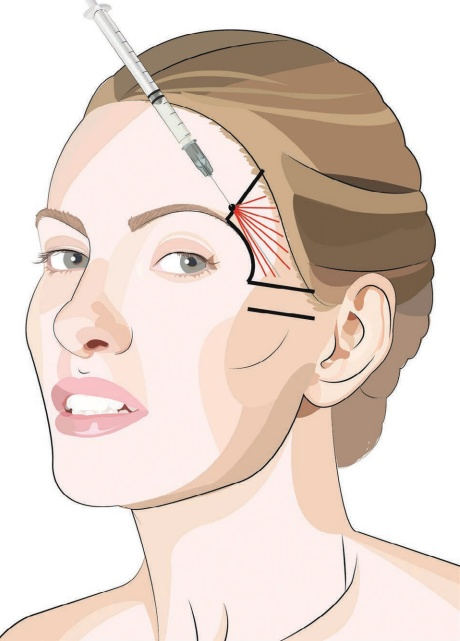
-
检查搏动情况并避免触及浅颞动脉和静脉。
-
在眶缘上方约 1 cm 处，标记的入点位于颞嵴内侧或其内侧边缘。
-
用含肾上腺素的 1% 利多卡因麻醉皮下，然后将针进一步推进至颞嵴处的额骨骨膜以达到更深层次的麻醉。
-
使用 23G 锐针建立预孔。
-
使用粘度略低的 CaHA 产品以降低结节形成的风险（例如，每 1.5 mL CaHA 注射器使用 0.3 mL 利多卡因）。
-
引入钝性套管针并将其推进至额骨骨膜（图 6.23）。
-
套管针沿颞嵴跨越骨膜。由于骨膜和深部颞筋膜是连续的解剖层次，此时套管针将位于深部颞筋膜和颞顶筋膜之间（图 6.24）。
-
可放置多个逆行线性丝，每根约 0.1 mL；或考虑注射多个团注，每次约 0.05–0.1 mL，然后手动将稀释后的产品分布到筋膜间隙。
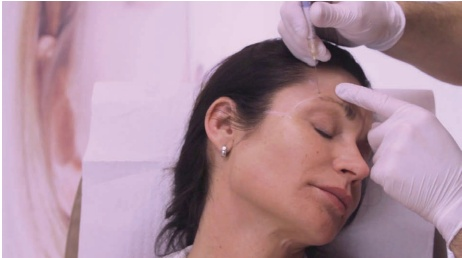
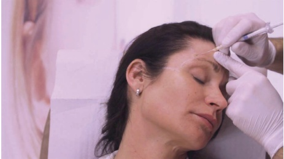
6.7 术后护理
如有必要，可手动按摩该区域以使产品均匀分布。注射后，由于局部压力增加，可见静脉和浅颞动脉扩张。太阳穴的肿胀可能不均匀，因此应告知患者任何肿胀都是可以预期的且是暂时的，通常持续一天，但最长可达五天。在皮下层注射时，肿胀比注射到更深层时更明显。使用锐针进行骨膜间隙注射时，由于产品主要通过此技术注射到肌肉内，可能会预期出现咀嚼时的疼痛。
6.8 实现最佳效果的附加治疗
为进一步改善颞部的美观，可考虑使用肉毒毒素和填充剂进行眉部重塑。此外，根据患者的具体情况和需求，可能建议使用局部乳膏、去角质或激光进行皮肤改善。
有关术前和术后效果以及不同的产品放置技术，请参阅图 6.25。
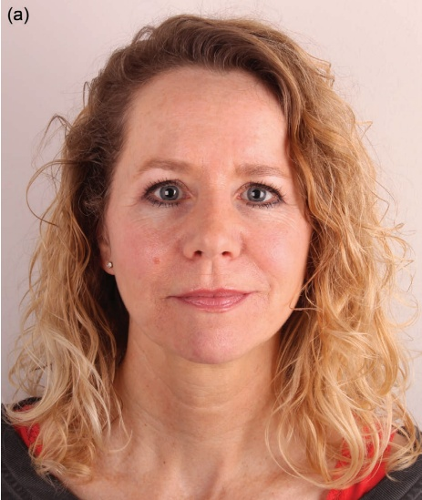
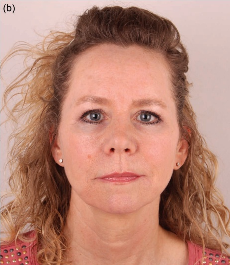
参考文献
[1] C. J. Moss et al., “Surgical anatomy of the ligamentous attachments in the temple and periorbital regions,” Plast Reconstr Surg, vol. 105, no. 4, pp. 1491–1498, 2000.
[2] V. M. Amaral et al., “An innovative treatment using calcium hydroxyapatite for non-surgical facial rejuvenation: The vectorial-lift technique,” Aesthet Plast Surg, vol. 48, no. 17, pp. 3206–3215, 2024.
[3] J. A. J. van Loghem et al., “Cannula versus sharp needle for placement of soft tissue fillers: An observational cadaver study,” Aesthet Surg J, vol. 38, no. 1, pp. 73–88, 2017.
[4] J. A. J. van Loghem et al., “Calcium hydroxylapatite: Over a decade of clinical experience,” J Clin Aesthet Dermatol, vol. 8, no. 1, p. 38, 2015.
[5] J. A. J. van Loghem et al., “Sensitivity of aspiration as a safety test before injection of soft tissue fillers,” J Cosmet Dermatol, vol. 17, no. 1, pp. 39–46, 2018.